A bakehouse in Asheville's River Arts District
Folded by hand, baked with patience.
Ember & Oak bakes naturally leavened sourdough and hand-laminated viennoiserie — real butter, real folds, real time — plus custom cakes designed one at a time with our pastry chef.

Bakery essentials at a glance
Hours
Tue–Fri 7am–3pm, Sat 7am–2pm. Closed Sun & Mon.
Location
214 Depot Street, Asheville, NC 28801
How we bake
Small daily batches, 60-hour cold ferment, butter laminated by hand.
What's fresh this week
A rotating look at what's coming out of the kitchen — the full menu has everything, including sizes for whole cakes.
Planning a cake for a big day?
Tell us the flavor, size, and vision — our pastry chef will follow up with a quote and available dates. We recommend booking 6–8 weeks ahead for weddings.
Baked slow, folded by hand, never a shortcut
60-hour cold ferment
Our sourdough starter has been alive since 2018. Doughs rest for days, not hours, for flavor and easier digestion.
Butter, laminated by hand
Croissant and kouign-amann dough is folded in-house — real European-style butter, real layers, no shortcuts.
Cakes built to order
No walk-in cake case — every celebration cake is designed one at a time with our pastry chef, from flavor to filling to message.